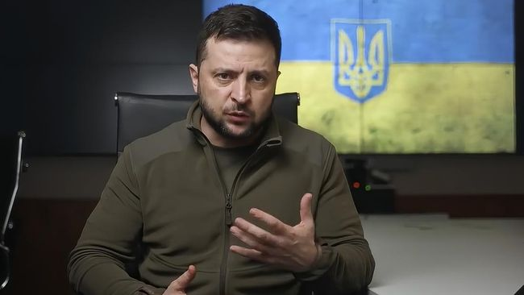

CNN Indonesia
Sabtu, 09 April 2022
Presiden Volodymyr Zelensky menegaskan Ukraina masih siap berdialog dengan Rusia demi meski sebelumnya ia sempat ogah bertemu dengan Presiden Vladimir Putin. (Ukrainian Presidential Press Office via AP)
Jakarta, CNN Indonesia -- Presiden Volodymyr Zelensky menegaskan bahwa Ukraina masih siap berdialog dengan Rusia demi menghentikan perang, meski sebelumnya ia sempat mengaku ogah bertemu dengan Presiden Vladimir Putin.
"Ukraina selalu siap untuk negosiasi dan mencari berbagai cara demi menghentikan perang ini," ujar Zelensky pada Sabtu (9/4), seperti dilansir AFP.
Zelensky mengatakan, ia memang sudah mendengar laporan mengenai kemungkinan Rusia tengah bersiap melancarkan gempuran besar di timur Ukraina.
Namun, Zelensky juga menegaskan bahwa Ukraina siap melawan sekaligus mengupayakan perundingan damai demi mencapai gencatan senjata penuh.
"Kami siap melawan dan secara bersamaan mengupayakan penghentian perang ini melalui diplomasi," ucap Zelensky.
Untuk mempersiapkan perlawanan, Zelensky mengaku sudah menyiagakan pasukannya. Berdasarkan keterangan awal yang dihimpun Zelensky, Rusia tengah mempersiapkan alutsista di utara dan timur Ukraina.
Zelensky menyatakan, keberhasilan gempuran Rusia ini sangat bergantung pada sejumlah faktor, yaitu "kekuatan Ukraina, seberapa cepat rekan kami memasok senjata kami, dan seberapa jauh keinginan pemimpin Rusia."
Di jalur diplomasi, Rusia dan Ukraina terakhir kali menggelar dialog pada 29 Maret lalu. Di pertemuan itu, Ukraina menyatakan siap menerima status netral dengan timbal balik jaminan keamanan dari pihak ketiga.
Status netral ini memastikan Ukraina tak bergabung dengan aliansi pertahanan mana pun. Namun, Ukraina ingin ada negara ketiga yang menjamin keamanan jika sewaktu-waktu negara mereka diserang lagi.
Kelanjutan dialog ini sempat dipertanyakan pada awal bulan ini, ketika Ukraina melaporkan ratusan jasad bergelimpangan di kota-kota di dekat Kyiv yang baru saja ditinggal pasukan Rusia.
Ukraina menduga para warga sipil itu dibunuh secara sadis oleh pasukan Rusia. Saat itu, Zelensky sempat menyatakan ragu bakal mau bertemu dengan Putin